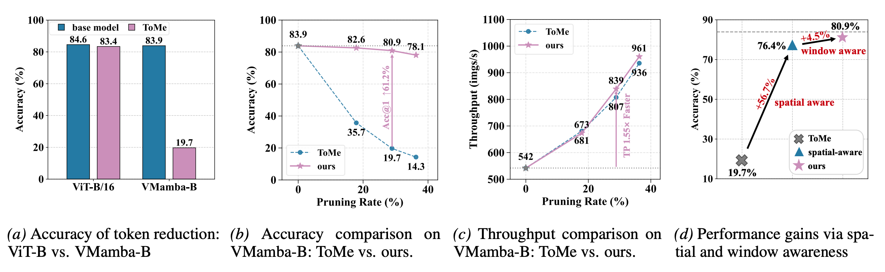
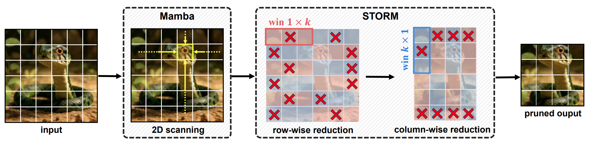
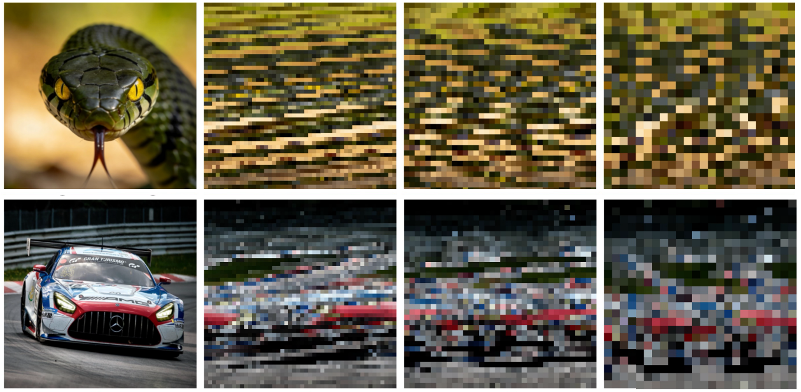
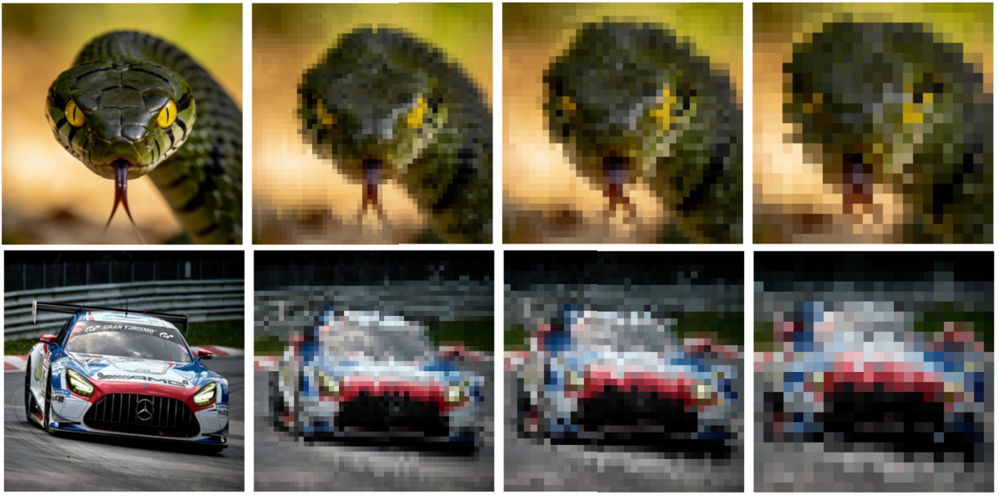

Mamba demonstrates strong efficiency in modeling long visual sequences. However, when token reduction is applied to structurally enhanced Mamba variants, these models exhibit a severe performance collapse. We attribute this degradation to the spatially agnostic nature of existing reduction methods, which violate the two-dimensional structural premise required by the selective scanning mechanism.
In this work, we propose STORM, a spatial-aware token reduction framework designed to maintain structural integrity throughout the compression process. STORM reformulates reduction into a structured operation on spatial units, enforcing localized constraints to maintain both grid topology and neighborhood coherence. As a plug-and-play module, STORM equips existing reduction pipelines with explicit spatial awareness without any training.
Empirical results demonstrate that STORM achieves state-of-the-art pruning accuracy across diverse vision Mamba backbones under training-free settings. Notably, STORM delivers a substantial accuracy recovery on VMamba, outperforming prior methods by up to 63.3% top-1 accuracy. Meanwhile, STORM incurs only a 1.0% accuracy drop on PlainMamba, achieving performance comparable to ViT.

Figure 1. Motivation and efficacy of the proposed spatial-aware token reduction framework. STORM demonstrates consistent improvements in token reduction performance across different reduction rates.

Figure 3. Overview of STORM. The framework performs spatially structured token reduction in two decoupled stages: row-wise and then column-wise reduction within localized windows, preserving the 2D grid layout required for selective scanning.
The STORM framework proposes a lightweight solution that refactors token reduction into a spatially structured process, as illustrated in Figure 3 above. The framework comprises three core features:
Instead of globally flattening tokens, STORM refactors the reduction process into two successive stages—row-wise and column-wise. This preserves a regular 2D grid topology, ensuring seamless compatibility with the 2D Selective Scan (SS2D) mechanism in Mamba.
To prevent semantic distortion from long-range interference, STORM partitions the feature map into non-overlapping local windows. Reduction operations are strictly confined within these contiguous neighborhoods to protect fine-grained details and local coherence.
By maintaining a structured layout, STORM ensures that the causal propagation paths of the four-way scanning are not disrupted. This allows the model to retain accurate spatial awareness and performance during inference without requiring any re-training.
STORM significantly prevents performance collapse in Vision Mamba models during token reduction, outperforming standard methods across ImageNet and downstream tasks.

Why it fails:
Conventional methods treat tokens as a 1D sequence. When tokens are pruned or merged globally:

How STORM fixes it:
STORM refactors the reduction into Structured Row & Column stages:
@article{lv2026spatial,
title={Spatial-Aware Reduction Framework:
Towards Efficient and Faithful Visual State Space Models},
author={Lv, Jindi and Li, Aoyu and Zhou, Yuhao and Zhu, Zheng and Wang, Xiaofeng and xxx},
journal={xxx},
year={2026}
}